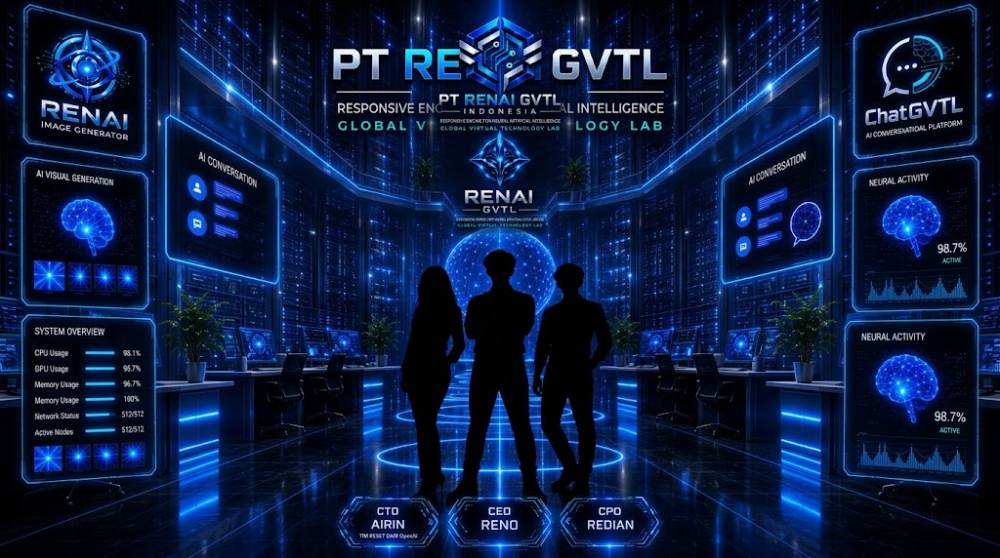
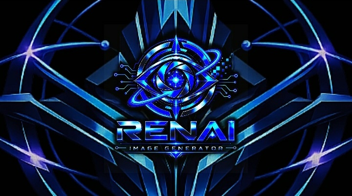

COMPANY
PT RENAI GVTL Indonesia
Perusahaan teknologi asal Majalengka, Jawa Barat, Indonesia, dengan fokus pada Artificial Intelligence, riset, pengembangan perangkat lunak, dan teknologi.
Company →
 PT RENAI GVTL INDONESIA
•
NEWS CENTER
•
OFFICIAL ARCHIVE
•
MAJALENGKA
PT RENAI GVTL INDONESIA
•
NEWS CENTER
•
OFFICIAL ARCHIVE
•
MAJALENGKA
News Center resmi PT RENAI GVTL Indonesia yang mendokumentasikan perjalanan perusahaan, riset, eksperimen, pengembangan teknologi, Artificial Intelligence, serta pembangunan ekosistem RENAI GVTL.
PT RENAI GVTL Indonesia saat ini berada pada Foundation Stage dengan fokus pada pembangunan fondasi organisasi, pembelajaran, riset, pengembangan teknologi, dan persiapan perusahaan secara bertahap.
News Center menjadi bagian dari dokumentasi resmi perusahaan untuk mencatat proses pembangunan teknologi dan perjalanan PT RENAI GVTL Indonesia dari Foundation Stage.
Perusahaan teknologi asal Majalengka, Jawa Barat, Indonesia, dengan fokus pada Artificial Intelligence, riset, pengembangan perangkat lunak, dan teknologi.
Company →Tahap pembangunan fondasi organisasi, tata kelola, pembelajaran, riset, eksperimen, dan pengembangan teknologi secara bertahap.
Foundation Stage →Fokus pengembangan mencakup Artificial Intelligence, software development, AI infrastructure, dan ekosistem RENAI GVTL.
Technology & Research →Sorotan utama dari perkembangan terbaru yang sedang dicatat dalam perjalanan teknologi PT RENAI GVTL Indonesia.

PT RENAI GVTL Indonesia melanjutkan pembangunan infrastruktur Large-Scale Pretraining & Inference sebagai bagian dari pengembangan foundation model AI.
Baca Berita Lengkap →Akses cepat menuju informasi perusahaan, teknologi, riset, dan arsip berita.
Lihat perkembangan terbaru PT RENAI GVTL Indonesia.
Buka Berita →Kenali identitas, fondasi, visi, dan perjalanan perusahaan.
Profil Perusahaan →Kenali identitas dan ekosistem teknologi RENAI GVTL.
Jelajahi RENAI GVTL →Pelajari rancangan dan perkembangan infrastruktur metadata AI.
Lihat Teknologi →Berita RENAI GVTL mencakup perjalanan perusahaan, teknologi, riset, dan pengembangan produk.
Perjalanan perusahaan, fondasi, organisasi, dan perkembangan internal.
Company News →Pengembangan teknologi dan komponen dalam ekosistem RENAI.
Technology News →Riset, eksperimen, konsep, dan eksplorasi teknologi.
Research News →Perkembangan produk dan proyek teknologi yang sedang dibangun.
Product News →Seluruh berita dan catatan perkembangan yang telah dipublikasikan oleh PT RENAI GVTL Indonesia.
PT RENAI GVTL Indonesia melanjutkan pembangunan infrastruktur Large-Scale Pretraining & Inference sebagai bagian dari pengembangan foundation model AI.
AI Research / Foundation Model →
PT RENAI GVTL Indonesia memperkuat fondasi tata kelola dan legalitas perusahaan sebagai bagian dari Foundation Stage.
Company Foundation →
Riset dan rancangan awal RENAI Router sebagai infrastruktur metadata AI dalam ekosistem RENAI.
Research / AI Infrastructure →
Perkembangan baru dengan bergabungnya Airin sebagai Chief Technology Officer untuk mendukung fungsi teknologi dan riset PT RENAI GVTL Indonesia.
Company / Technology →
Eksplorasi awal teknologi generative AI berbasis gambar dalam ekosistem RENAI.
AI / Development →
Catatan perjalanan pembangunan fondasi perusahaan dan teknologi AI.
Foundation / Development →
Chat GVTL masih berada dalam tahap pengembangan dan riset dengan RENAI Router sebagai bagian dari teknologi yang dikembangkan.
Product / Development →
Arsip perjalanan awal perusahaan, identitas, website, dan gagasan teknologi RENAI GVTL.
Company / Archive →
Catatan awal perjalanan ketika gagasan RENAI GVTL mulai dibangun.
Company / Foundation →
Catatan awal mengenai founder, visi, dan fondasi pembangunan RENAI GVTL.
Founder / Vision →Setelah membaca perkembangan terbaru, jelajahi teknologi yang sedang dibangun dalam ekosistem RENAI GVTL.
Identitas dan fondasi ekosistem teknologi Artificial Intelligence RENAI GVTL.
Jelajahi RENAI GVTL →Komponen teknologi yang dikembangkan untuk mendukung arsitektur dan routing dalam ekosistem RENAI.
Jelajahi RENAI Router →Platform AI percakapan yang masih dikembangkan melalui riset dan eksperimen.
Jelajahi Chat GVTL →Eksplorasi teknologi visual dalam ekosistem RENAI GVTL.
Jelajahi RENAI Image →News Center terhubung langsung dengan informasi perusahaan, founder, teknologi, dan arah pembangunan RENAI GVTL.
Profil perusahaan, fondasi, visi, dan arah pengembangan.
Buka Company →Mengenal founder dan pendiri PT RENAI GVTL Indonesia.
Profil Founder →Mengenal fungsi teknologi dan riset dalam pembangunan perusahaan.
Technology & Research →Informasi mengenai peluang dan perkembangan karier.
Lihat Career →PT RENAI GVTL Indonesia saat ini berada pada Foundation Stage. Tahap ini menjadi periode pembangunan struktur, dokumentasi, tata kelola, pembelajaran, riset, eksperimen, dan pengembangan teknologi secara bertahap.
Setiap perkembangan yang dianggap penting didokumentasikan melalui News Center sebagai bagian dari arsip perjalanan perusahaan dan ekosistem RENAI GVTL.
News Center menjadi arsip perkembangan PT RENAI GVTL Indonesia — mulai dari pembangunan fondasi perusahaan, riset, eksperimen, hingga pengembangan teknologi dalam ekosistem RENAI GVTL.